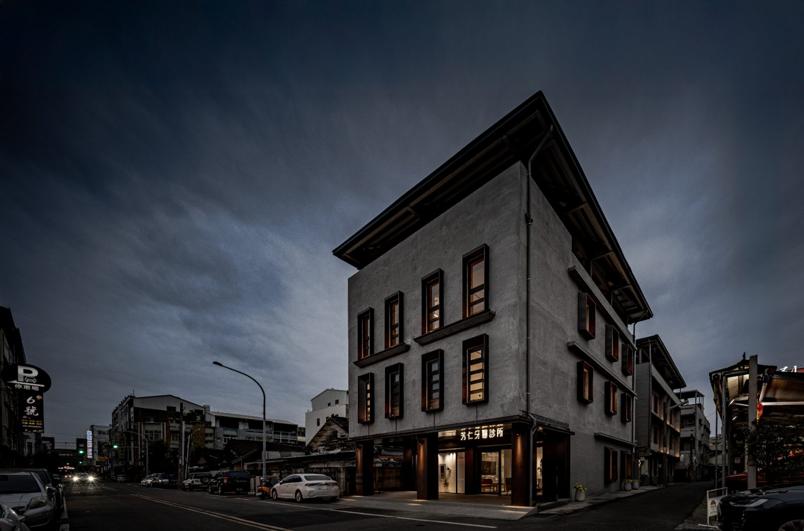

底下兩排切換。卡片寬度 212px 是從你那張 LINE 截圖量到的真實值 （635 裝置 px ÷ DPR 3）。⚠ 圖的高度跟著那張圖自己的比例走 —— LINE 沒有裁圖，所以現況那張 1.51:1 會長成一張又高又暗的卡。

—
—
「邊緣密度」＝ 縮到小圖之後還有多少相鄰像素亮度差得出來，也就是
還看得見多少細節。ILLUSTRATION.md 第十一節記著：19.3% 是那張被你說
「像鬼屋欸」的失敗版，你給的參考圖是 41.1%。
描述那兩行：訊息 app 的氣泡只露兩行（實測約 27 個全形字），
現在的「到巷口的芳仁 一起想辦法」是 12 個字，一行就放得下。